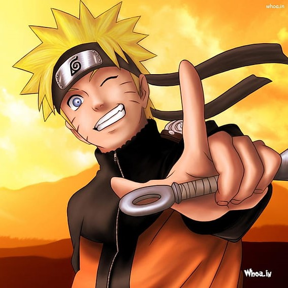

Hello.
I take ass and kick names
Jutsu proficiency

Rasengan
This is one of my first Jutsu I had ever learnt. Taught to me by Master Jiraya and originally created by the Fourth Hokage.And its better than the Chidori , Fight me.
Shadow Clone
I learnt this jutsu when I "accidentally" stole the forbbiden Jutsu scroll from the Fifth hokage . Got nearly killed and exiled for it , but in the end it helped me pass the genin exam and saved Iruka Sensi's life, So all good in the end.

Sexy jutsu
This is one of the First jutsu I created to pass the genin exam. This is so powerful that the Fifth Hokage , Jiraya Sensei and even a god Kaguya fell for it.